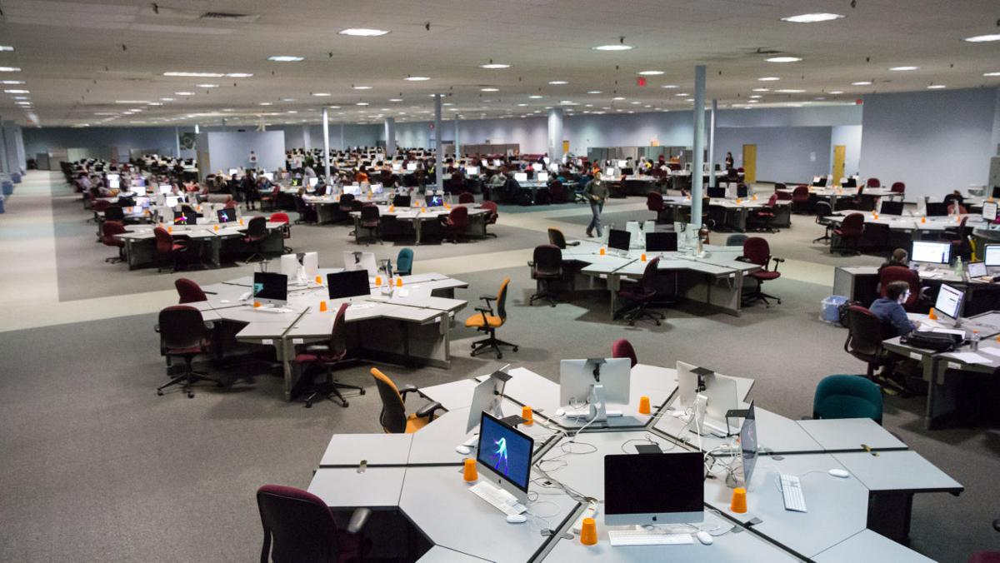

MATH_1014: Math
Math Emporium Official Website
The Math Emporium at Virginia Tech is a learning center for the study of mathematics. There are more than 500 Apple workstations arranged in hexagonal pods six computers in each. A Testing Center room provides 221 additional workstations for proctored exams. There are also large meeting areas equipped with a computer projection system and whitebords for formal presentations.
On Media:
Course Introduction:
Math 1014 covers topics in Precalculus, including College Algebra and Trigonometry with various applications. It is a self-paced course with all materials available online. It is a self-paced course that responds to individual learning styles.
My Opinion:
This self-guided course has provided an efficient way of studying the course material. Besides the specialized help sessions at Math Emporium, I can also gain help from my instructor and other tutoring programs at my own time. This class is fun, execpt the fact that I DON'T like Math.